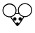
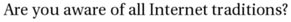
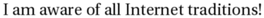
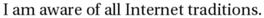
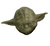
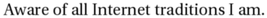
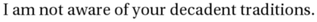
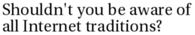
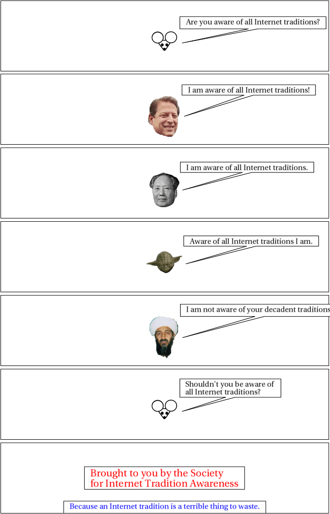

interpret_script.pl runs:
Script specification
panel font size=12 mouse says Are you aware of all Internet traditions? mouse leaves panel al says I am aware of all Internet traditions! al leaves panel mao says I am aware of all Internet traditions. mao leaves panel yoda says Aware of all Internet traditions I am. yoda leaves panel osama says I am not aware of your decadent traditions. osama leaves panel mouse says Shouldn't you be aware of<br/>all Internet traditions? mouse leaves panel caption (middle, size=16, color=255,0,0) Brought to you by the Society<br/>for Internet Tradition Awareness caption (bottom middle, color=0,0,255) Because an Internet tradition is a terrible thing to waste.
Interpretation follows:
panel
Panel - (parameters currently ignored)
font size=12
Font size is now 12.
Font is still default
mouse says Are you aware of all Internet traditions?
Speech implies presence: speaker is "mouse".
Speaker says: "Are you aware of all Internet traditions?"
mouse leaves
Character mouse leaves scene
panel
Panel - (parameters currently ignored)
al says I am aware of all Internet traditions!
Speech implies presence: speaker is "al".
Speaker says: "I am aware of all Internet traditions!"
al leaves
Character al leaves scene
panel
Panel - (parameters currently ignored)
mao says I am aware of all Internet traditions.
Speech implies presence: speaker is "mao".
Speaker says: "I am aware of all Internet traditions."
mao leaves
Character mao leaves scene
panel
Panel - (parameters currently ignored)
yoda says Aware of all Internet traditions I am.
Speech implies presence: speaker is "yoda".
Speaker says: "Aware of all Internet traditions I am."
yoda leaves
Character yoda leaves scene
panel
Panel - (parameters currently ignored)
osama says I am not aware of your decadent traditions.
Speech implies presence: speaker is "osama".
Speaker says: "I am not aware of your decadent traditions."
osama leaves
Character osama leaves scene
panel
Panel - (parameters currently ignored)
mouse says Shouldn't you be aware of
all Internet traditions?
Speech implies presence: speaker is "mouse".
Speaker says: "Shouldn't you be aware of
all Internet traditions?"
mouse leaves
Character mouse leaves scene
panel
Panel - (parameters currently ignored)
caption (middle, size=16, color=255,0,0) Brought to you by the Society
for Internet Tradition Awareness
Caption with arguments middle, size=16, color=255,0,0, saying "Brought to you by the Society
for Internet Tradition Awareness".
caption (bottom middle, color=0,0,255) Because an Internet tradition is a terrible thing to waste.
Caption with arguments bottom middle, color=0,0,255, saying "Because an Internet tradition is a terrible thing to waste.".
Resulting XML definition:
<cartoon rowformat="1" width="700" panel-h="150" character-base-url="http://www.vivtek.com/toonbots/characters/"> <panel> <character name="mouse" action="leaves"/> <dialog who="mouse" font-size="12">Are you aware of all Internet traditions?</dialog> </panel> <panel> <character name="al" action="leaves"/> <dialog who="al" font-size="12">I am aware of all Internet traditions!</dialog> </panel> <panel> <character name="mao" action="leaves"/> <dialog who="mao" font-size="12">I am aware of all Internet traditions.</dialog> </panel> <panel> <character name="yoda" action="leaves"/> <dialog who="yoda" font-size="12">Aware of all Internet traditions I am.</dialog> </panel> <panel> <character name="osama" action="leaves"/> <dialog who="osama" font-size="12">I am not aware of your decadent traditions.</dialog> </panel> <panel> <character name="mouse" action="leaves"/> <dialog who="mouse" font-size="12">Shouldn't you be aware of<br/>all Internet traditions?</dialog> </panel> <panel> <caption font-size="16," font-color="255,0,0" location="middle">Brought to you by the Society<br/>for Internet Tradition Awareness</caption> <caption font-size="12" font-color="0,0,255" location="bottom middle">Because an Internet tradition is a terrible thing to waste.</caption> </panel> </cartoon>
instantiate.pl runs, but doesn't really do anything yet.
build_panel_make.pl runs.
Scene default:
<scene id="default" panels="1-2-3-4-5-6-7"> <frame tag="default-1" id="1" panels="1"> <character name="mouse" action="leaves" tag="default-1"/> </frame> <frame tag="default-2" id="2" panels="2"> <character name="al" action="leaves" tag="default-2"/> </frame> <frame tag="default-3" id="3" panels="3"> <character name="mao" action="leaves" tag="default-3"/> </frame> <frame tag="default-4" id="4" panels="4"> <character name="yoda" action="leaves" tag="default-4"/> </frame> <frame tag="default-5" id="5" panels="5"> <character name="osama" action="leaves" tag="default-5"/> </frame> <frame tag="default-6" id="6" panels="6"> <character name="mouse" action="leaves" tag="default-6"/> </frame> <frame tag="default-7" id="7" panels="7"/> </scene>
Panel Makefile is as follows:
# Panel Makefile generated Wed Jun 18 15:40:56 PDT 2008 by Toon-o-Matic t2 # Contains no serviceable parts. Batteries not included. # Void in NH, VT, and U.S. Minor Outlying Islands. all: panel-1.svg panel-2.svg panel-3.svg panel-4.svg panel-5.svg panel-6.svg panel-7.svg panel-1.svg: character-mouse-default-1-1.svg dialog-1-1.svg perl build_panel_g.pl panel-1.xml 1 1 > panel-1-g.svg perl merge_svg.pl "panel 1" panel-1-g.svg character-mouse-default-1-1.svg dialog-1-1.svg > panel-1.svg placement-panel-1.xml: draw-character-mouse-default-1.xml perl place_characters.pl "panel 1" 698 150 draw-character-mouse-default-1.xml > placement-panel-1.xml panel-2.svg: character-al-default-2-2.svg dialog-2-2.svg perl build_panel_g.pl panel-2.xml 1 157 > panel-2-g.svg perl merge_svg.pl "panel 2" panel-2-g.svg character-al-default-2-2.svg dialog-2-2.svg > panel-2.svg placement-panel-2.xml: draw-character-al-default-2.xml perl place_characters.pl "panel 2" 698 150 draw-character-al-default-2.xml > placement-panel-2.xml panel-3.svg: character-mao-default-3-3.svg dialog-3-3.svg perl build_panel_g.pl panel-3.xml 1 314 > panel-3-g.svg perl merge_svg.pl "panel 3" panel-3-g.svg character-mao-default-3-3.svg dialog-3-3.svg > panel-3.svg placement-panel-3.xml: draw-character-mao-default-3.xml perl place_characters.pl "panel 3" 698 150 draw-character-mao-default-3.xml > placement-panel-3.xml panel-4.svg: character-yoda-default-4-4.svg dialog-4-4.svg perl build_panel_g.pl panel-4.xml 1 471 > panel-4-g.svg perl merge_svg.pl "panel 4" panel-4-g.svg character-yoda-default-4-4.svg dialog-4-4.svg > panel-4.svg placement-panel-4.xml: draw-character-yoda-default-4.xml perl place_characters.pl "panel 4" 698 150 draw-character-yoda-default-4.xml > placement-panel-4.xml panel-5.svg: character-osama-default-5-5.svg dialog-5-5.svg perl build_panel_g.pl panel-5.xml 1 628 > panel-5-g.svg perl merge_svg.pl "panel 5" panel-5-g.svg character-osama-default-5-5.svg dialog-5-5.svg > panel-5.svg placement-panel-5.xml: draw-character-osama-default-5.xml perl place_characters.pl "panel 5" 698 150 draw-character-osama-default-5.xml > placement-panel-5.xml panel-6.svg: character-mouse-default-6-6.svg dialog-6-6.svg perl build_panel_g.pl panel-6.xml 1 785 > panel-6-g.svg perl merge_svg.pl "panel 6" panel-6-g.svg character-mouse-default-6-6.svg dialog-6-6.svg > panel-6.svg placement-panel-6.xml: draw-character-mouse-default-6.xml perl place_characters.pl "panel 6" 698 150 draw-character-mouse-default-6.xml > placement-panel-6.xml panel-7.svg: caption-7-1.svg caption-7-2.svg perl build_panel_g.pl panel-7.xml 1 942 > panel-7-g.svg perl merge_svg.pl "panel 7" panel-7-g.svg caption-7-1.svg caption-7-2.svg > panel-7.svg placement-panel-7.xml: perl place_characters.pl "panel 7" 698 150 > placement-panel-7.xml draw-character-mao-default-3.xml: character-mao-default-3.xml perl build_character.pl this 698 150 character-mao-default-3.xml > draw-character-mao-default-3.xml character-mao-default-3-3.svg: draw-character-mao-default-3.xml placement-panel-3.xml perl draw.pl draw-character-mao-default-3.xml 698 150 placement-panel-3.xml > character-mao-default-3-3.svg draw-character-mouse-default-6.xml: character-mouse-default-6.xml perl build_character.pl this 698 150 character-mouse-default-6.xml > draw-character-mouse-default-6.xml character-mouse-default-6-6.svg: draw-character-mouse-default-6.xml placement-panel-6.xml perl draw.pl draw-character-mouse-default-6.xml 698 150 placement-panel-6.xml > character-mouse-default-6-6.svg draw-character-mouse-default-1.xml: character-mouse-default-1.xml perl build_character.pl this 698 150 character-mouse-default-1.xml > draw-character-mouse-default-1.xml character-mouse-default-1-1.svg: draw-character-mouse-default-1.xml placement-panel-1.xml perl draw.pl draw-character-mouse-default-1.xml 698 150 placement-panel-1.xml > character-mouse-default-1-1.svg dialog-3-3.info: dialog-3-3.xml character-mao-default-3-3.svg perl render_text.pl dialog-3-3.xml dialog-3-3.png identify -format '<graphic size="%b" height="%h" width="%w" geometry="%g" file="%f"/>' dialog-3-3.png > dialog-3-3.info dialog-3-3.svg: dialog-3-3.info perl draw_caption.pl dialog-3-3.xml dialog-3-3.info 698 150 0 dialog-3-3.png > dialog-3-3.svg dialog-1-1.info: dialog-1-1.xml character-mouse-default-1-1.svg perl render_text.pl dialog-1-1.xml dialog-1-1.png identify -format '<graphic size="%b" height="%h" width="%w" geometry="%g" file="%f"/>' dialog-1-1.png > dialog-1-1.info dialog-1-1.svg: dialog-1-1.info perl draw_caption.pl dialog-1-1.xml dialog-1-1.info 698 150 0 dialog-1-1.png > dialog-1-1.svg dialog-6-6.info: dialog-6-6.xml character-mouse-default-6-6.svg perl render_text.pl dialog-6-6.xml dialog-6-6.png identify -format '<graphic size="%b" height="%h" width="%w" geometry="%g" file="%f"/>' dialog-6-6.png > dialog-6-6.info dialog-6-6.svg: dialog-6-6.info perl draw_caption.pl dialog-6-6.xml dialog-6-6.info 698 150 0 dialog-6-6.png > dialog-6-6.svg draw-character-osama-default-5.xml: character-osama-default-5.xml perl build_character.pl this 698 150 character-osama-default-5.xml > draw-character-osama-default-5.xml character-osama-default-5-5.svg: draw-character-osama-default-5.xml placement-panel-5.xml perl draw.pl draw-character-osama-default-5.xml 698 150 placement-panel-5.xml > character-osama-default-5-5.svg dialog-2-2.info: dialog-2-2.xml character-al-default-2-2.svg perl render_text.pl dialog-2-2.xml dialog-2-2.png identify -format '<graphic size="%b" height="%h" width="%w" geometry="%g" file="%f"/>' dialog-2-2.png > dialog-2-2.info dialog-2-2.svg: dialog-2-2.info perl draw_caption.pl dialog-2-2.xml dialog-2-2.info 698 150 0 dialog-2-2.png > dialog-2-2.svg draw-character-yoda-default-4.xml: character-yoda-default-4.xml perl build_character.pl this 698 150 character-yoda-default-4.xml > draw-character-yoda-default-4.xml character-yoda-default-4-4.svg: draw-character-yoda-default-4.xml placement-panel-4.xml perl draw.pl draw-character-yoda-default-4.xml 698 150 placement-panel-4.xml > character-yoda-default-4-4.svg dialog-5-5.info: dialog-5-5.xml character-osama-default-5-5.svg perl render_text.pl dialog-5-5.xml dialog-5-5.png identify -format '<graphic size="%b" height="%h" width="%w" geometry="%g" file="%f"/>' dialog-5-5.png > dialog-5-5.info dialog-5-5.svg: dialog-5-5.info perl draw_caption.pl dialog-5-5.xml dialog-5-5.info 698 150 0 dialog-5-5.png > dialog-5-5.svg caption-7-1.info: caption-7-1.xml perl render_text.pl caption-7-1.xml caption-7-1.png identify -format '<graphic size="%b" height="%h" width="%w" geometry="%g" file="%f"/>' caption-7-1.png > caption-7-1.info caption-7-1.svg: caption-7-1.info perl draw_caption.pl caption-7-1.xml caption-7-1.info 698 150 0 caption-7-1.png > caption-7-1.svg dialog-4-4.info: dialog-4-4.xml character-yoda-default-4-4.svg perl render_text.pl dialog-4-4.xml dialog-4-4.png identify -format '<graphic size="%b" height="%h" width="%w" geometry="%g" file="%f"/>' dialog-4-4.png > dialog-4-4.info dialog-4-4.svg: dialog-4-4.info perl draw_caption.pl dialog-4-4.xml dialog-4-4.info 698 150 0 dialog-4-4.png > dialog-4-4.svg caption-7-2.info: caption-7-2.xml perl render_text.pl caption-7-2.xml caption-7-2.png identify -format '<graphic size="%b" height="%h" width="%w" geometry="%g" file="%f"/>' caption-7-2.png > caption-7-2.info caption-7-2.svg: caption-7-2.info perl draw_caption.pl caption-7-2.xml caption-7-2.info 698 150 0 caption-7-2.png > caption-7-2.svg draw-character-al-default-2.xml: character-al-default-2.xml perl build_character.pl this 698 150 character-al-default-2.xml > draw-character-al-default-2.xml character-al-default-2-2.svg: draw-character-al-default-2.xml placement-panel-2.xml perl draw.pl draw-character-al-default-2.xml 698 150 placement-panel-2.xml > character-al-default-2-2.svgbuild_character.pl runs on character-mouse-default-1.xml:
<character action="leaves" name="mouse" tag="default-1"/>Retrieving character definition for mouse; URL is http://www.vivtek.com/toonbots/characters/mouse.xml
Retrieving image from http://www.vivtek.com/toonbots/characters/mouse.bmp

Final character definition:
<character name="mouse" label="mouse" rel-h="40"> <draw file="image-mouse-1.bmp" type="image"/> </character>
Built character:
<character action="leaves" name="mouse" tag="default-1" rel-h="40" rel-w="" height="60" width="64.3137254901961"> <draw file="image-mouse-1.bmp" type="image" rel-h="100" rel-w="100" height="60" rel-x="0" rel-y="0" w="164" h="153" width="64.3137254901961"/> </character>
place_characters.pl places characters for panel 1:
<placement> <character name="mouse" x="316.843137254902" y="60"/> </placement>
draw.pl runs on draw-character-mouse-default-1.xml:
SVG built:
<g x="316.843137254902" y="60" w="64.3137254901961" h="60"> <image x="316.843137254902" y="60" width="64.3137254901961" height="60" xlink:href="image-mouse-1.bmp"/> </g>
render_text.pl renders "dialog-1-1.xml":
<dialog who="mouse" ref-who="character-mouse-default-1-1.svg" font-size="12">Are you aware of all Internet traditions?</dialog>
draw_caption.pl runs:
Graphics info:
<graphic width="291" file="dialog-1-1.png" geometry="2500x320+14+3" height="22" size="16219"/>
<g> <polyline style="stroke:black; stroke-width:1; fill:white" points="381.156862745098,34 692.156862745098,34 692.156862745098,60 546.656862745098,60 386.156862745098,90 526.656862745098,60 381.156862745098,60 381.156862745098,34"/> <image x="10" y="2" width="291" height="22" xlink:href="dialog-1-1.png" transform="translate(381.156862745098,34)"/> </g>
build_panel_g.pl runs, producing:
<g transform="translate(1,1)"/>
merge_svg.pl runs to produce panel 1:
<g transform="translate(1,1)"><g w="64.3137254901961" y="60" h="60" x="316.843137254902"> <image width="64.3137254901961" y="60" xlink:href="image-mouse-1.bmp" x="316.843137254902" height="60"/> </g> <g> <polyline points="381.156862745098,34 692.156862745098,34 692.156862745098,60 546.656862745098,60 386.156862745098,90 526.656862745098,60 381.156862745098,60 381.156862745098,34" style="stroke:black; stroke-width:1; fill:white"/> <image width="291" y="2" transform="translate(381.156862745098,34)" xlink:href="dialog-1-1.png" x="10" height="22"/> </g> </g>
build_character.pl runs on character-al-default-2.xml:
<character action="leaves" name="al" tag="default-2"/>Retrieving character definition for al; URL is http://www.vivtek.com/toonbots/characters/al.xml
Retrieving image from http://www.vivtek.com/toonbots/characters/gore1.bmp
Retrieving image from http://www.vivtek.com/toonbots/characters/gore2.bmp
Final character definition:
<character name="al" label="Al Gore" rel-h="60"> <variant> <aspect name="1"><draw face="left" file="image-al-1.bmp" type="image"/></aspect> <aspect name="2"><draw face="right" file="image-al-2.bmp" type="image"/></aspect> </variant> </character>
Instantiating variant ().
Built character:
<character action="leaves" name="al" tag="default-2" rel-h="60" rel-w="" height="90" width="73.2558139534884"> <draw face="left" file="image-al-1.bmp" type="image" rel-h="100" rel-w="100" height="90" rel-x="0" rel-y="0" w="70" h="86" width="73.2558139534884"/> </character>
place_characters.pl places characters for panel 2:
<placement> <character name="al" x="312.372093023256" y="45"/> </placement>
draw.pl runs on draw-character-al-default-2.xml:
SVG built:
<g x="312.372093023256" y="45" w="73.2558139534884" h="90"> <image x="312.372093023256" y="45" width="73.2558139534884" height="90" xlink:href="image-al-1.bmp"/> </g>
render_text.pl renders "dialog-2-2.xml":
<dialog who="al" ref-who="character-al-default-2-2.svg" font-size="12">I am aware of all Internet traditions!</dialog>
draw_caption.pl runs:
Graphics info:
<graphic width="264" file="dialog-2-2.png" geometry="2500x320+15+3" height="18" size="14843"/>
<g> <polyline style="stroke:black; stroke-width:1; fill:white" points="385.627906976744,23 669.627906976744,23 669.627906976744,45 537.627906976744,45 390.627906976744,90 517.627906976744,45 385.627906976744,45 385.627906976744,23"/> <image x="10" y="2" width="264" height="18" xlink:href="dialog-2-2.png" transform="translate(385.627906976744,23)"/> </g>
build_panel_g.pl runs, producing:
<g transform="translate(1,157)"/>
merge_svg.pl runs to produce panel 2:
<g transform="translate(1,157)"><g w="73.2558139534884" y="45" h="90" x="312.372093023256"> <image width="73.2558139534884" y="45" xlink:href="image-al-1.bmp" x="312.372093023256" height="90"/> </g> <g> <polyline points="385.627906976744,23 669.627906976744,23 669.627906976744,45 537.627906976744,45 390.627906976744,90 517.627906976744,45 385.627906976744,45 385.627906976744,23" style="stroke:black; stroke-width:1; fill:white"/> <image width="264" y="2" transform="translate(385.627906976744,23)" xlink:href="dialog-2-2.png" x="10" height="18"/> </g> </g>
build_character.pl runs on character-mao-default-3.xml:
<character action="leaves" name="mao" tag="default-3"/>Retrieving character definition for mao; URL is http://www.vivtek.com/toonbots/characters/mao.xml
Retrieving image from http://www.vivtek.com/toonbots/characters/mao.bmp
Final character definition:
<character name="mao" label="Chairman Mao" rel-h="50"> <draw face="left" file="image-mao-1.bmp" type="image"/> </character>
Built character:
<character action="leaves" name="mao" tag="default-3" rel-h="50" rel-w="" height="75" width="66.2068965517241"> <draw face="left" file="image-mao-1.bmp" type="image" rel-h="100" rel-w="100" height="75" rel-x="0" rel-y="0" w="128" h="145" width="66.2068965517241"/> </character>
place_characters.pl places characters for panel 3:
<placement> <character name="mao" x="315.896551724138" y="52.5"/> </placement>
draw.pl runs on draw-character-mao-default-3.xml:
SVG built:
<g x="315.896551724138" y="52.5" w="66.2068965517241" h="75"> <image x="315.896551724138" y="52.5" width="66.2068965517241" height="75" xlink:href="image-mao-1.bmp"/> </g>
render_text.pl renders "dialog-3-3.xml":
<dialog who="mao" ref-who="character-mao-default-3-3.svg" font-size="12">I am aware of all Internet traditions.</dialog>
draw_caption.pl runs:
Graphics info:
<graphic width="264" file="dialog-3-3.png" geometry="2500x320+15+3" height="18" size="14643"/>
<g> <polyline style="stroke:black; stroke-width:1; fill:white" points="382.103448275862,30.5 666.103448275862,30.5 666.103448275862,52.5 534.103448275862,52.5 387.103448275862,90 514.103448275862,52.5 382.103448275862,52.5 382.103448275862,30.5"/> <image x="10" y="2" width="264" height="18" xlink:href="dialog-3-3.png" transform="translate(382.103448275862,30.5)"/> </g>
build_panel_g.pl runs, producing:
<g transform="translate(1,314)"/>
merge_svg.pl runs to produce panel 3:
<g transform="translate(1,314)"><g w="66.2068965517241" y="52.5" h="75" x="315.896551724138"> <image width="66.2068965517241" y="52.5" xlink:href="image-mao-1.bmp" x="315.896551724138" height="75"/> </g> <g> <polyline points="382.103448275862,30.5 666.103448275862,30.5 666.103448275862,52.5 534.103448275862,52.5 387.103448275862,90 514.103448275862,52.5 382.103448275862,52.5 382.103448275862,30.5" style="stroke:black; stroke-width:1; fill:white"/> <image width="264" y="2" transform="translate(382.103448275862,30.5)" xlink:href="dialog-3-3.png" x="10" height="18"/> </g> </g>
build_character.pl runs on character-yoda-default-4.xml:
<character action="leaves" name="yoda" tag="default-4"/>Retrieving character definition for yoda; URL is http://www.vivtek.com/toonbots/characters/yoda.xml
Retrieving image from http://www.vivtek.com/toonbots/characters/yoda.jpg

Final character definition:
<character name="yoda" label="Yoda" rel-h="50"> <draw file="image-yoda-1.jpg" type="image"/> </character>
Built character:
<character action="leaves" name="yoda" tag="default-4" rel-h="50" rel-w="" height="75" width="80.7692307692308"> <draw file="image-yoda-1.jpg" type="image" rel-h="100" rel-w="100" height="75" rel-x="0" rel-y="0" w="154" h="143" width="80.7692307692308"/> </character>
place_characters.pl places characters for panel 4:
<placement> <character name="yoda" x="308.615384615385" y="52.5"/> </placement>
draw.pl runs on draw-character-yoda-default-4.xml:
SVG built:
<g x="308.615384615385" y="52.5" w="80.7692307692308" h="75"> <image x="308.615384615385" y="52.5" width="80.7692307692308" height="75" xlink:href="image-yoda-1.jpg"/> </g>
render_text.pl renders "dialog-4-4.xml":
<dialog who="yoda" ref-who="character-yoda-default-4-4.svg" font-size="12">Aware of all Internet traditions I am.</dialog>
draw_caption.pl runs:
Graphics info:
<graphic width="267" file="dialog-4-4.png" geometry="2500x320+14+3" height="18" size="15386"/>
<g> <polyline style="stroke:black; stroke-width:1; fill:white" points="389.384615384616,30.5 676.384615384616,30.5 676.384615384616,52.5 542.884615384616,52.5 394.384615384616,90 522.884615384616,52.5 389.384615384616,52.5 389.384615384616,30.5"/> <image x="10" y="2" width="267" height="18" xlink:href="dialog-4-4.png" transform="translate(389.384615384616,30.5)"/> </g>
build_panel_g.pl runs, producing:
<g transform="translate(1,471)"/>
merge_svg.pl runs to produce panel 4:
<g transform="translate(1,471)"><g w="80.7692307692308" y="52.5" h="75" x="308.615384615385"> <image width="80.7692307692308" y="52.5" xlink:href="image-yoda-1.jpg" x="308.615384615385" height="75"/> </g> <g> <polyline points="389.384615384616,30.5 676.384615384616,30.5 676.384615384616,52.5 542.884615384616,52.5 394.384615384616,90 522.884615384616,52.5 389.384615384616,52.5 389.384615384616,30.5" style="stroke:black; stroke-width:1; fill:white"/> <image width="267" y="2" transform="translate(389.384615384616,30.5)" xlink:href="dialog-4-4.png" x="10" height="18"/> </g> </g>
build_character.pl runs on character-osama-default-5.xml:
<character action="leaves" name="osama" tag="default-5"/>Retrieving character definition for osama; URL is http://www.vivtek.com/toonbots/characters/osama.xml
Retrieving image from http://www.vivtek.com/toonbots/characters/osama.gif
Retrieving image from http://www.vivtek.com/toonbots/characters/osama2.gif
Retrieving image from http://www.vivtek.com/toonbots/characters/osama3.gif
Retrieving image from http://www.vivtek.com/toonbots/characters/osama4.gif
Final character definition:
<character name="osama" label="Osama bin Laden" rel-h="60"> <variant> <aspect name="normal"><draw file="image-osama-1.gif" type="image"/></aspect> <aspect name="hypno"><draw file="image-osama-2.gif" type="image"/></aspect> <aspect name="post-wolverine"><draw file="image-osama-3.gif" type="image"/></aspect> <aspect name="post-penguin"><draw file="image-osama-4.gif" type="image"/></aspect> </variant> </character>
Instantiating variant ().
Built character:
<character action="leaves" name="osama" tag="default-5" rel-h="60" rel-w="" height="90" width="66.6"> <draw file="image-osama-1.gif" type="image" rel-h="100" rel-w="100" height="90" rel-x="0" rel-y="0" w="74" h="100" width="66.6"/> </character>
place_characters.pl places characters for panel 5:
<placement> <character name="osama" x="315.7" y="45"/> </placement>
draw.pl runs on draw-character-osama-default-5.xml:
SVG built:
<g x="315.7" y="45" w="66.6" h="90"> <image x="315.7" y="45" width="66.6" height="90" xlink:href="image-osama-1.gif"/> </g>
render_text.pl renders "dialog-5-5.xml":
<dialog who="osama" ref-who="character-osama-default-5-5.svg" font-size="12">I am not aware of your decadent traditions.</dialog>
draw_caption.pl runs:
Graphics info:
<graphic width="317" file="dialog-5-5.png" geometry="2500x320+15+3" height="22" size="16931"/>
<g> <polyline style="stroke:black; stroke-width:1; fill:white" points="382.3,19 719.3,19 719.3,45 560.8,45 387.3,90 540.8,45 382.3,45 382.3,19"/> <image x="10" y="2" width="317" height="22" xlink:href="dialog-5-5.png" transform="translate(382.3,19)"/> </g>
build_panel_g.pl runs, producing:
<g transform="translate(1,628)"/>
merge_svg.pl runs to produce panel 5:
<g transform="translate(1,628)"><g w="66.6" y="45" h="90" x="315.7"> <image width="66.6" y="45" xlink:href="image-osama-1.gif" x="315.7" height="90"/> </g> <g> <polyline points="382.3,19 719.3,19 719.3,45 560.8,45 387.3,90 540.8,45 382.3,45 382.3,19" style="stroke:black; stroke-width:1; fill:white"/> <image width="317" y="2" transform="translate(382.3,19)" xlink:href="dialog-5-5.png" x="10" height="22"/> </g> </g>
build_character.pl runs on character-mouse-default-6.xml:
<character action="leaves" name="mouse" tag="default-6"/>
Built character:
<character action="leaves" name="mouse" tag="default-6" rel-h="40" rel-w="" height="60" width="64.3137254901961"> <draw file="image-mouse-1.bmp" type="image" rel-h="100" rel-w="100" height="60" rel-x="0" rel-y="0" w="164" h="153" width="64.3137254901961"/> </character>
place_characters.pl places characters for panel 6:
<placement> <character name="mouse" x="316.843137254902" y="60"/> </placement>
draw.pl runs on draw-character-mouse-default-6.xml:
SVG built:
<g x="316.843137254902" y="60" w="64.3137254901961" h="60"> <image x="316.843137254902" y="60" width="64.3137254901961" height="60" xlink:href="image-mouse-1.bmp"/> </g>
render_text.pl renders "dialog-6-6.xml":
<dialog who="mouse" ref-who="character-mouse-default-6-6.svg" font-size="12">Shouldn't you be aware of<br/>all Internet traditions?</dialog>
draw_caption.pl runs:
Graphics info:
<graphic width="195" file="dialog-6-6.png" geometry="2500x320+16+3" height="35" size="20665"/>
<g> <polyline style="stroke:black; stroke-width:1; fill:white" points="381.156862745098,21 596.156862745098,21 596.156862745098,60 498.656862745098,60 386.156862745098,90 478.656862745098,60 381.156862745098,60 381.156862745098,21"/> <image x="10" y="2" width="195" height="35" xlink:href="dialog-6-6.png" transform="translate(381.156862745098,21)"/> </g>
build_panel_g.pl runs, producing:
<g transform="translate(1,785)"/>
merge_svg.pl runs to produce panel 6:
<g transform="translate(1,785)"><g w="64.3137254901961" y="60" h="60" x="316.843137254902"> <image width="64.3137254901961" y="60" xlink:href="image-mouse-1.bmp" x="316.843137254902" height="60"/> </g> <g> <polyline points="381.156862745098,21 596.156862745098,21 596.156862745098,60 498.656862745098,60 386.156862745098,90 478.656862745098,60 381.156862745098,60 381.156862745098,21" style="stroke:black; stroke-width:1; fill:white"/> <image width="195" y="2" transform="translate(381.156862745098,21)" xlink:href="dialog-6-6.png" x="10" height="35"/> </g> </g>
render_text.pl renders "caption-7-1.xml":
<caption location="middle" font-color="255,0,0" font-size="16,">Brought to you by the Society<br/>for Internet Tradition Awareness</caption>
draw_caption.pl runs:
Graphics info:
<graphic width="321" file="caption-7-1.png" geometry="2500x320+21+5" height="44" size="30628"/>
<g transform="translate(178,51)" x="178" y="51" w="341" h="48"> <rect x="0" y="0" width="341" height="48" style="stroke:black; stroke-width:1; fill:white"/> <image x="10" y="2" width="321" height="44" xlink:href="caption-7-1.png"/> </g>
render_text.pl renders "caption-7-2.xml":
<caption location="bottom middle" font-color="0,0,255" font-size="12">Because an Internet tradition is a terrible thing to waste.</caption>
draw_caption.pl runs:
Graphics info:
<graphic width="410" file="caption-7-2.png" geometry="2500x320+15+3" height="22" size="17612"/>
<g transform="translate(134,124)" x="134" y="124" w="430" h="26"> <rect x="0" y="0" width="430" height="26" style="stroke:black; stroke-width:1; fill:white"/> <image x="10" y="2" width="410" height="22" xlink:href="caption-7-2.png"/> </g>
build_panel_g.pl runs, producing:
<g transform="translate(1,942)"/>
merge_svg.pl runs to produce panel 7:
<g transform="translate(1,942)"><g w="341" y="51" h="48" transform="translate(178,51)" x="178"> <rect width="341" y="0" style="stroke:black; stroke-width:1; fill:white" x="0" height="48"/> <image width="321" y="2" xlink:href="caption-7-1.png" x="10" height="44"/> </g> <g w="430" y="124" h="26" transform="translate(134,124)" x="134"> <rect width="430" y="0" style="stroke:black; stroke-width:1; fill:white" x="0" height="26"/> <image width="410" y="2" xlink:href="caption-7-2.png" x="10" height="22"/> </g> </g>
draw_panels.pl runs:
<svg height="1094" width="702"> <rect height="1094" width="700" style="fill: white"/> <polyline transform="" style="fill:none; stroke:black; stroke-width:1" arrow="" points="1,785 699,785 699,935 1,935 1,785"/> <polyline transform="" style="fill:none; stroke:black; stroke-width:1" arrow="" points="1,471 699,471 699,621 1,621 1,471"/> <polyline transform="" style="fill:none; stroke:black; stroke-width:1" arrow="" points="1,1 699,1 699,151 1,151 1,1"/> <polyline transform="" style="fill:none; stroke:black; stroke-width:1" arrow="" points="1,314 699,314 699,464 1,464 1,314"/> <polyline transform="" style="fill:none; stroke:black; stroke-width:1" arrow="" points="1,942 699,942 699,1092 1,1092 1,942"/> <polyline transform="" style="fill:none; stroke:black; stroke-width:1" arrow="" points="1,157 699,157 699,307 1,307 1,157"/> <polyline transform="" style="fill:none; stroke:black; stroke-width:1" arrow="" points="1,628 699,628 699,778 1,778 1,628"/> </svg>
merge_svg.pl runs to produce the final cartoon:
<svg width="702" height="1094"> <rect width="700" style="fill: white" height="1094"/> <polyline transform="" points="1,785 699,785 699,935 1,935 1,785" style="fill:none; stroke:black; stroke-width:1" arrow=""/> <polyline transform="" points="1,471 699,471 699,621 1,621 1,471" style="fill:none; stroke:black; stroke-width:1" arrow=""/> <polyline transform="" points="1,1 699,1 699,151 1,151 1,1" style="fill:none; stroke:black; stroke-width:1" arrow=""/> <polyline transform="" points="1,314 699,314 699,464 1,464 1,314" style="fill:none; stroke:black; stroke-width:1" arrow=""/> <polyline transform="" points="1,942 699,942 699,1092 1,1092 1,942" style="fill:none; stroke:black; stroke-width:1" arrow=""/> <polyline transform="" points="1,157 699,157 699,307 1,307 1,157" style="fill:none; stroke:black; stroke-width:1" arrow=""/> <polyline transform="" points="1,628 699,628 699,778 1,778 1,628" style="fill:none; stroke:black; stroke-width:1" arrow=""/> <g transform="translate(1,1)"/> <g transform="translate(1,1)"><g y="60" w="64.3137254901961" h="60" x="316.843137254902"> <image y="60" width="64.3137254901961" xlink:href="image-mouse-1.bmp" x="316.843137254902" height="60"/> </g> <g> <polyline style="stroke:black; stroke-width:1; fill:white" points="381.156862745098,34 692.156862745098,34 692.156862745098,60 546.656862745098,60 386.156862745098,90 526.656862745098,60 381.156862745098,60 381.156862745098,34"/> <image y="2" width="291" transform="translate(381.156862745098,34)" xlink:href="dialog-1-1.png" x="10" height="22"/> </g> </g> <g transform="translate(1,157)"/> <g transform="translate(1,157)"><g y="45" w="73.2558139534884" h="90" x="312.372093023256"> <image y="45" width="73.2558139534884" xlink:href="image-al-1.bmp" x="312.372093023256" height="90"/> </g> <g> <polyline style="stroke:black; stroke-width:1; fill:white" points="385.627906976744,23 669.627906976744,23 669.627906976744,45 537.627906976744,45 390.627906976744,90 517.627906976744,45 385.627906976744,45 385.627906976744,23"/> <image y="2" width="264" transform="translate(385.627906976744,23)" xlink:href="dialog-2-2.png" x="10" height="18"/> </g> </g> <g transform="translate(1,314)"/> <g transform="translate(1,314)"><g y="52.5" w="66.2068965517241" h="75" x="315.896551724138"> <image y="52.5" width="66.2068965517241" xlink:href="image-mao-1.bmp" x="315.896551724138" height="75"/> </g> <g> <polyline style="stroke:black; stroke-width:1; fill:white" points="382.103448275862,30.5 666.103448275862,30.5 666.103448275862,52.5 534.103448275862,52.5 387.103448275862,90 514.103448275862,52.5 382.103448275862,52.5 382.103448275862,30.5"/> <image y="2" width="264" transform="translate(382.103448275862,30.5)" xlink:href="dialog-3-3.png" x="10" height="18"/> </g> </g> <g transform="translate(1,471)"/> <g transform="translate(1,471)"><g y="52.5" w="80.7692307692308" h="75" x="308.615384615385"> <image y="52.5" width="80.7692307692308" xlink:href="image-yoda-1.jpg" x="308.615384615385" height="75"/> </g> <g> <polyline style="stroke:black; stroke-width:1; fill:white" points="389.384615384616,30.5 676.384615384616,30.5 676.384615384616,52.5 542.884615384616,52.5 394.384615384616,90 522.884615384616,52.5 389.384615384616,52.5 389.384615384616,30.5"/> <image y="2" width="267" transform="translate(389.384615384616,30.5)" xlink:href="dialog-4-4.png" x="10" height="18"/> </g> </g> <g transform="translate(1,628)"/> <g transform="translate(1,628)"><g y="45" w="66.6" h="90" x="315.7"> <image y="45" width="66.6" xlink:href="image-osama-1.gif" x="315.7" height="90"/> </g> <g> <polyline style="stroke:black; stroke-width:1; fill:white" points="382.3,19 719.3,19 719.3,45 560.8,45 387.3,90 540.8,45 382.3,45 382.3,19"/> <image y="2" width="317" transform="translate(382.3,19)" xlink:href="dialog-5-5.png" x="10" height="22"/> </g> </g> <g transform="translate(1,785)"/> <g transform="translate(1,785)"><g y="60" w="64.3137254901961" h="60" x="316.843137254902"> <image y="60" width="64.3137254901961" xlink:href="image-mouse-1.bmp" x="316.843137254902" height="60"/> </g> <g> <polyline style="stroke:black; stroke-width:1; fill:white" points="381.156862745098,21 596.156862745098,21 596.156862745098,60 498.656862745098,60 386.156862745098,90 478.656862745098,60 381.156862745098,60 381.156862745098,21"/> <image y="2" width="195" transform="translate(381.156862745098,21)" xlink:href="dialog-6-6.png" x="10" height="35"/> </g> </g> <g transform="translate(1,942)"/> <g transform="translate(1,942)"><g y="51" w="341" transform="translate(178,51)" h="48" x="178"> <rect y="0" width="341" style="stroke:black; stroke-width:1; fill:white" x="0" height="48"/> <image y="2" width="321" xlink:href="caption-7-1.png" x="10" height="44"/> </g> <g y="124" w="430" transform="translate(134,124)" h="26" x="134"> <rect y="0" width="430" style="stroke:black; stroke-width:1; fill:white" x="0" height="26"/> <image y="2" width="410" xlink:href="caption-7-2.png" x="10" height="22"/> </g> </g> </svg>
The final result (drumroll please!)
